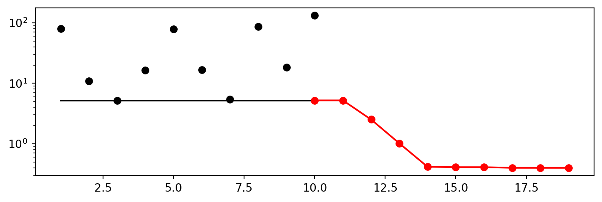
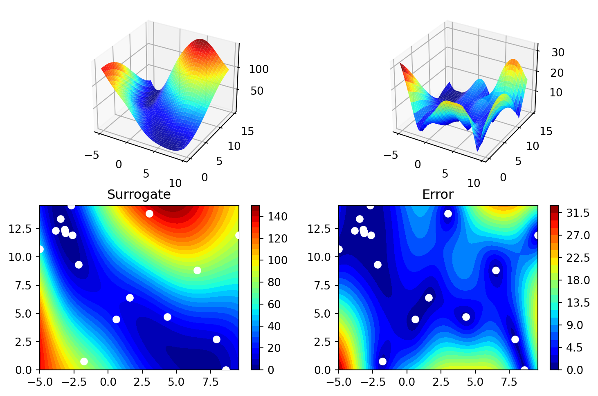

import numpy as np
from math import inf
from spotPython.fun.objectivefunctions import analytical
from spotPython.spot import spot
from scipy.optimize import shgo
from scipy.optimize import direct
from scipy.optimize import differential_evolution
from scipy.optimize import dual_annealing
from scipy.optimize import basinhopping
import matplotlib.pyplot as pltSequential Parameter Optimization
Using scipy Optimizers
- This notebook describes how different optimizers form the
scipy optimizepackage can be used on the surrogate. - The optimization algorithms are available from https://docs.scipy.org/doc/scipy/reference/optimize.html
The Objective Function Branin
The
spotPythonpackage provides several classes of objective functions.We will use an analytical objective function, i.e., a function that can be described by a (closed) formula.
Here we will use the Branin function. The 2-dim Branin function is
\[y = a * (x2 - b * x1**2 + c * x1 - r) ** 2 + s * (1 - t) * cos(x1) + s,\] where values of a, b, c, r, s and t are: \(a = 1, b = 5.1 / (4*pi**2), c = 5 / pi, r = 6, s = 10\) and \(t = 1 / (8*pi)\).
It has three global minima:
\(f(x) = 0.397887\) at \((-\pi, 12.275)\), \((\pi, 2.275)\), and \((9.42478, 2.475)\).
Input Domain: This function is usually evaluated on the square x1 in [-5, 10] x x2 in [0, 15].
from spotPython.fun.objectivefunctions import analytical
lower = np.array([-5,-0])
upper = np.array([10,15])fun = analytical(seed=123).fun_braninThe Optimizer
Differential Evalution from the
scikit.optimizepackage, see https://docs.scipy.org/doc/scipy/reference/generated/scipy.optimize.differential_evolution.html#scipy.optimize.differential_evolution is the default optimizer for the search on the surrogate.Other optimiers that are available in
spotPython:dual_annealingdirectshgobasinhopping, see https://docs.scipy.org/doc/scipy/reference/optimize.html#global-optimization.
These can be selected as follows:
surrogate_control = "model_optimizer": differential_evolutionWe will use
differential_evolution.The optimizer can use
1000evaluations. This value will be passed to thedifferential_evolutionmethod, which has the argumentmaxiter(int). It defines the maximum number of generations over which the entire differential evolution population is evolved, see https://docs.scipy.org/doc/scipy/reference/generated/scipy.optimize.differential_evolution.html#scipy.optimize.differential_evolution
spot_de = spot.Spot(fun=fun,
lower = lower,
upper = upper,
fun_evals = 20,
max_time = inf,
seed=125,
noise=False,
show_models= False,
design_control={"init_size": 10},
surrogate_control={"n_theta": 2,
"model_optimizer": differential_evolution,
"model_fun_evals": 1000,
})
spot_de.run()<spotPython.spot.spot.Spot at 0x103b5d9c0>Print the Results
spot_de.print_results()min y: 0.39951958110619046
x0: -3.1570201165683587
x1: 12.289980569430284[['x0', -3.1570201165683587], ['x1', 12.289980569430284]]Show the Progress
spot_de.plot_progress(log_y=True)
spot_de.surrogate.plot()
Exercises
- Important:
- Results from these exercises should be added to this document, i.e., you should submit an updated version of this notebook.
- Please combine your results using this notebook.
- Only one notebook from each group!
- Presentation is based on this notebook. No addtional slides are required!
- spotPython version
0.16.11(or greater) is required (see http://www.gm.fh-koeln.de/~bartz/site/download/
Exercise 1
- Each team member should choose one of the following optimization algorithms.
- Please add your name to the section title!
1. dual_annealing
- Describe the optimization algorithm
- Use the algorithm as an optimizer on the surrogate
2. direct
- Describe the optimization algorithm
- Use the algorithm as an optimizer on the surrogate
3. shgo
- Describe the optimization algorithm
- Use the algorithm as an optimizer on the surrogate
4. basinhopping
- Describe the optimization algorithm
- Use the algorithm as an optimizer on the surrogate
Exercise 2
(All group members): * Compare the performance and run time of the 5 different optimizers: * differential_evolution * dual_annealing * direct * shgo * basinhopping. * The Branin function has three global minima: * \(f(x) = 0.397887\) at * \((-\pi, 12.275)\), * \((\pi, 2.275)\), and * \((9.42478, 2.475)\). * Which optima are found by the optimizers? Does the seed change this behavior?